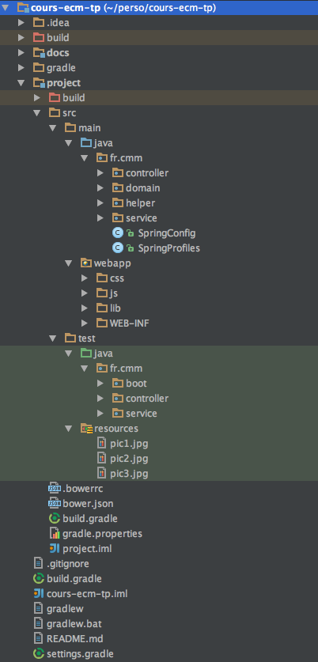
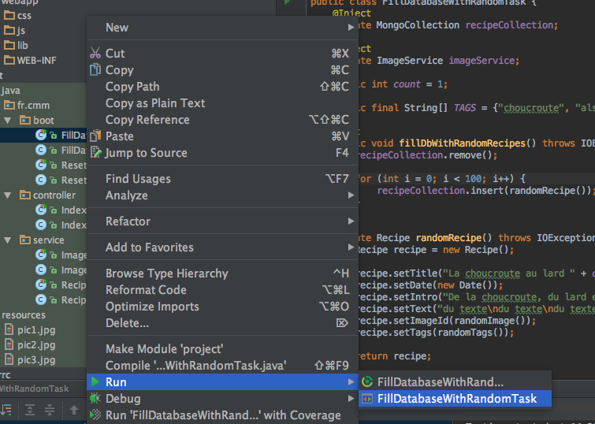
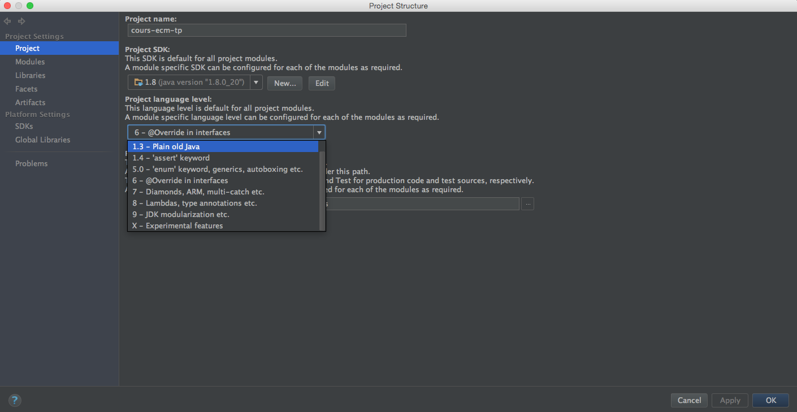

Récupération du projet
Le code source du projet est sous github https://github.com/dbourdette/cours-ecm
1. Fork
Il ne sera pas possible de travailler directement dans ce repository (vous n’avez pas les droits).
Github permet de rappatrier simplement un repository vers son compte en faisant un fork.
| le guide complet du fork de github : https://help.github.com/articles/fork-a-repo/ |
Simplement, depuis https://github.com/dbourdette/cours-ecm, il suffit d’appuyer sur le bouton fork.

2. Clone
Une fois que le fork est fait, il suffit de faire un clone afin de récupérer le projet en local.
projects$ git clone https://github.com/{username}/cours-ecm.git (1)
projects$ cd cours-ecm
cours-ecm$| 1 | On récupère le code de son fork |
Vous avez maintenant le code source en local.
Le projet est divisé en 2 parties :
-
docs : qui contient le source de la documentation
-
project : qui contient le code source du site
3. gradle tomcatRun
| il faut que la base mongodb soit lancée pour que l’application démarre avec succès |
A la racine on peut lancer le site :
cours-ecm$ gradle tomcatRun
:project:compileJava UP-TO-DATE
:project:processResources UP-TO-DATE
:project:classes UP-TO-DATE
:project:tomcatRun
Started Tomcat Server
The Server is running at http://localhost:8080
> Building 75% > :project:tomcatRuntomcatRun est une tâche qui a été ajoutée par le plugin com.bmuschko.tomcat.
plugins {
id "com.bmuschko.tomcat" version "2.1"
}Cette tâche lance un serveur tomcat et y place notre application à la volée.
Notre site est donc disponible sur http://localhost:8080/
4. Structure de notre projet
Notre projet reprend la structure classique des applications web jee.
On y retrouve, en plus, quelques fichiers relatifs aux frameworks utilisés.
src
├─ main
| ├─ java // nos classes java
| | └─ fr
| | └─ cmm // fr.cmm notre package de base
| | ├─ controller // nos controllers
| | ├─ domain // classes qui définissent notre domaine
| | ├─ helper // classes utilitaires
| | ├─ service // les services
| | ├─ SpringConfig.java // la configation de spring
| | └─ SpringProfiles.java // les profils d'éxécution
| └─ webapp // les fichiers qui vont à la racine de l'application web
| ├─ css // les feuilles de style
| ├─ js // notre javascript
| ├─ lib // les librairies front (importées via bower)
| └─ WEB-INF // fichiers de configuration protégés
| ├─ jsp // les templates jsp
| ├─ tags // les tag files (morceaux de template)
| ├─ spring-servlet.xml // configuration web de spring
| └─ web.xml // configuration web d'une application jee
└─ test
├─ java
└─ resources
.bowerrc // fichier de configuration de bower
bower.json // fichier de configuration de bower
build.gradle // fichier de configuration de gradle
gradle.properties // propriétés du build gradleMalgré la faible taille de notre projet, cela fait déjà beaucoup de fichiers. Chaque fichier ou dossier correspond à une facette de notre projet.
A partir d’ici, il va falloir intervenir à différents endroits afin de corriger ou ajouter des fonctionnalités de notre application.
5. Import sous Intellij
Dans intellij faire un File[New > Project from Existing Sources…] et choisir le build.gradle à la racine du projet (contenant docs et project).

6. Bootstrap de la base
La classe FillDatabaseWithRandomTask permet de remplir la base avec des données de test.
@Test
public void fillDbWithRandomRecipes() throws IOException {
recipeCollection.remove();
for (int i = 0; i < 100; i++) {
recipeCollection.insert(randomRecipe());
}
}| Afin de naviguer rapidement vers une classe, il est possible d’utiliser le raccourci ⌘+n |
Exécutez ce test afin de remplir la base locale.

| Il faut faire tourner le test en direct et non au travers de gradle (symbole gradle dans les 2 éléments du menu Run) |
Il se peut que vous ayez l’erreur suivante.

Il faut alors juste changer le niveau de language supporté dans les preférences  du projet.
du projet.

On doit alors obtenir une base remplie et le log suivant.
nov. 20, 2015 2:55:45 PM org.springframework.test.context.support.DefaultTestContextBootstrapper getDefaultTestExecutionListenerClassNames
INFOS: Loaded default TestExecutionListener class names from location [META-INF/spring.factories]: [org.springframework.test.context.web.ServletTestExecutionListener, org.springframework.test.context.support.DependencyInjectionTestExecutionListener, org.springframework.test.context.support.DirtiesContextTestExecutionListener, org.springframework.test.context.transaction.TransactionalTestExecutionListener, org.springframework.test.context.jdbc.SqlScriptsTestExecutionListener]
nov. 20, 2015 2:55:45 PM org.springframework.test.context.support.DefaultTestContextBootstrapper instantiateListeners
INFOS: Could not instantiate TestExecutionListener [org.springframework.test.context.jdbc.SqlScriptsTestExecutionListener]. Specify custom listener classes or make the default listener classes (and their required dependencies) available. Offending class: [org/springframework/transaction/interceptor/TransactionAttribute]
nov. 20, 2015 2:55:45 PM org.springframework.test.context.support.DefaultTestContextBootstrapper instantiateListeners
INFOS: Could not instantiate TestExecutionListener [org.springframework.test.context.transaction.TransactionalTestExecutionListener]. Specify custom listener classes or make the default listener classes (and their required dependencies) available. Offending class: [org/springframework/transaction/interceptor/TransactionAttributeSource]
nov. 20, 2015 2:55:45 PM org.springframework.test.context.support.DefaultTestContextBootstrapper getTestExecutionListeners
INFOS: Using TestExecutionListeners: [org.springframework.test.context.web.ServletTestExecutionListener@340f438e, org.springframework.test.context.support.DependencyInjectionTestExecutionListener@30c7da1e, org.springframework.test.context.support.DirtiesContextTestExecutionListener@5b464ce8]
nov. 20, 2015 2:55:45 PM org.springframework.context.support.GenericApplicationContext prepareRefresh
INFOS: Refreshing org.springframework.context.support.GenericApplicationContext@531be3c5: startup date [Fri Nov 20 14:55:45 CET 2015]; root of context hierarchy
nov. 20, 2015 2:55:45 PM org.springframework.beans.factory.annotation.AutowiredAnnotationBeanPostProcessor <init>
INFOS: JSR-330 'javax.inject.Inject' annotation found and supported for autowiring
nov. 20, 2015 2:55:47 PM org.springframework.context.support.GenericApplicationContext doClose
INFOS: Closing org.springframework.context.support.GenericApplicationContext@531be3c5: startup date [Fri Nov 20 14:55:45 CET 2015]; root of context hierarchy
Process finished with exit code 0On peut maintenant aller voir les recettes sur le site.